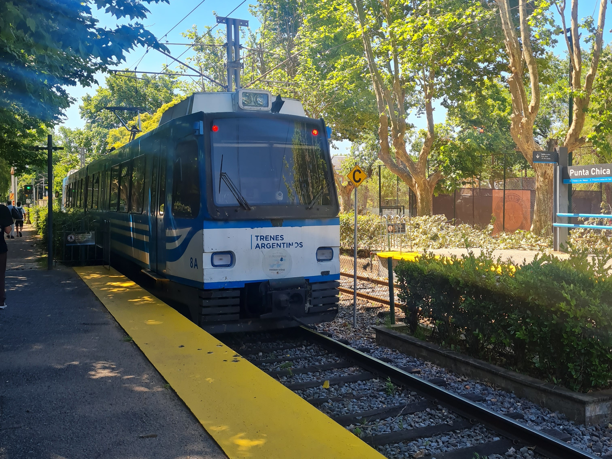
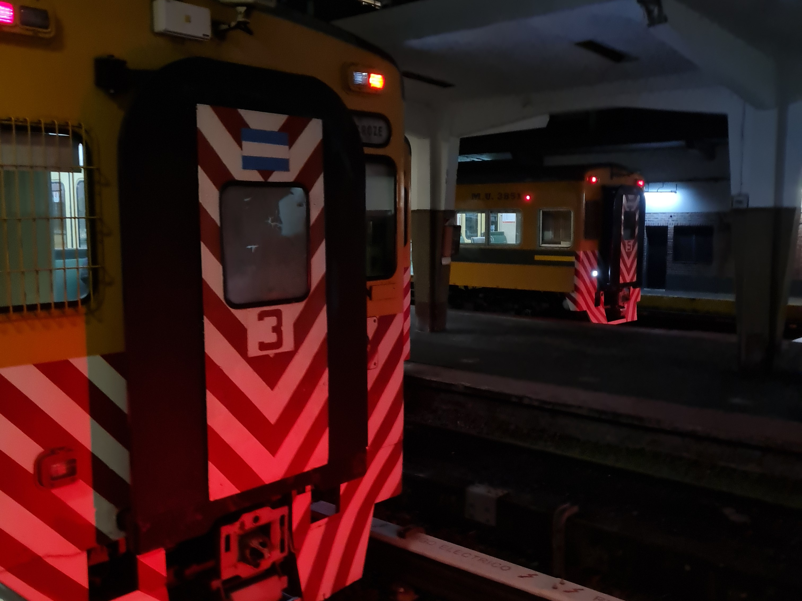
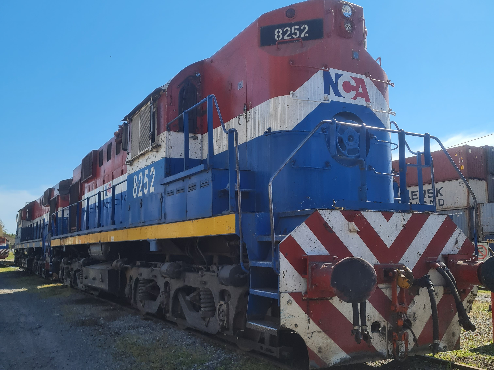

Cuatro escenas, cuatro formas de mirar el ferrocarril
Una fotografía puede servir para identificar un vehículo, pero también para estudiar cómo se relacionan un tren, un andén y las instalaciones que lo rodean. En esta selección del archivo propio de Andén, cada imagen responde a una pregunta distinta: cómo se accede a una formación, cómo se organiza una terminal, qué permite reconocer una locomotora y qué infraestructura acompaña a los coches.
Los lugares identificados retoman los datos del archivo del sitio; las observaciones describen elementos visibles en las imágenes. Las fechas de captura no están documentadas en las fichas de esta selección. La fecha de revisión al pie corresponde a la edición del artículo.
TREN DE LA COSTA / PUNTA CHICA
El tren y el borde del andén

El encuadre reúne tres referencias que ayudan a situar la escena: la formación, el borde amarillo del andén y el cartel «Punta Chica». La vegetación y las construcciones completan el entorno, pero es la señalización de la estación la que aporta la referencia más directa sobre el lugar.
En el techo se distingue el equipo de captación bajo la línea aérea. En el lateral, las puertas se distribuyen a lo largo de la formación para el acceso de pasajeros. La relación entre esas puertas y la altura del andén permite mirar el tren como parte de un sistema de transporte, además de observar su frente.
Para recorrer esta línea, la operadora publica la relación Avenida Maipú–Delta y su plano de estaciones. Ese documento sirve para ubicar Punta Chica dentro del recorrido; la imagen registra una escena del archivo, mientras que los horarios para un viaje se consultan en la información oficial del Tren de la Costa.
LÍNEA URQUIZA / FEDERICO LACROZE
Una terminal vista desde sus formaciones

La iluminación dirige la mirada hacia los extremos de las formaciones. En el frente más cercano se reconocen el número grande, el paso central y las franjas de contraste; más atrás, otra formación permite comparar la disposición de los vehículos en la terminal.
La cubierta aporta profundidad y explica parte de la diferencia de luz entre el interior y el fondo. Las líneas del andén y de las vías conducen hacia el segundo tren. En este caso, la arquitectura ayuda a leer la organización del espacio: varios vehículos pueden aparecer juntos sin formar un único servicio.
Esta imagen se complementa con la vista lateral del Urquiza en la guía de tracción. El frente facilita observar la cabina y los elementos de identificación; el lateral muestra mejor la repetición de puertas, ventanas y coches. Son lecturas complementarias de una misma red.
CARGAS / NUEVO CENTRAL ARGENTINO
La identificación comienza por el número

El número 8252 y la inscripción NCA son los datos de identificación más claros de esta fotografía. La vista de tres cuartos también permite reconocer la diferencia entre la cabina elevada y el cuerpo longitudinal de la locomotora.
En la parte baja se observan los bogies, las ruedas y la suspensión. Las pasarelas y los pasamanos recorren el lateral, mientras que en el extremo frontal se distinguen el enganche y las mangueras de conexión. Estos elementos permiten describir la función de distintas zonas del vehículo sin depender solamente del esquema de pintura.
La fotografía es un punto de partida para una ficha, pero la asociación entre un número y un modelo debe apoyarse en registros. El catálogo oficial de NCA presenta sus familias de locomotoras y vagones; no publica en esa página una correspondencia individual para la 8252. Por eso, esta ficha conserva la identificación comprobable de la unidad y desarrolla la lectura visual del conjunto.
LÍNEA ROCA / REMEDIOS DE ESCALADA
Los coches y la infraestructura que los acompaña

A diferencia de la imagen de Punta Chica, aquí el vehículo aparece principalmente de perfil. La repetición de ventanas, las puertas y los extremos de los coches permiten observar su organización longitudinal. Al fondo hay otros vehículos: la escena amplía la mirada desde un único coche hacia el conjunto de instalaciones.
La red de conductores y soportes sobre las vías es parte importante del registro. Se puede seguir la posición relativa de los postes, las ménsulas y la línea aérea respecto del material rodante. La fotografía deja documentada esa relación entre infraestructura y vehículos, aunque no permita conocer el estado de mantenimiento de cada equipo.
La misma imagen se utiliza en la explicación de la captación por catenaria. Allí distinguimos los componentes fijos de los equipos del tren y relacionamos la escena con la documentación de electrificación del Roca.
Cómo conservar el contexto de una fotografía
Para incorporar nuevas imágenes al archivo, los datos más útiles son el lugar, la fecha original cuando se conozca, la identificación del vehículo y una descripción de lo que aparece en el encuadre. Conviene conservar el archivo original y registrar de dónde proviene cada dato. La fecha de edición o exportación de un archivo puede ser diferente de la fecha en que se tomó la foto.
Un número visible permite retomar una búsqueda más adelante. Un cartel puede confirmar una estación. Una ficha de material rodante puede aportar el modelo. Mantener separadas esas referencias hace que el archivo pueda ampliarse con información comprobada, sin convertir una impresión visual en un dato histórico.
Autoría y reutilización
Las imágenes pertenecen al archivo propio de Andén — Trenes.com.ar. Se publican bajo Creative Commons Atribución–NoComercial–CompartirIgual 2.0. Al reutilizarlas, corresponde identificar la autoría, enlazar el sitio y la licencia, indicar las modificaciones y respetar las condiciones de uso no comercial y compartir igual.
Una atribución de referencia es: «Fotografía: Andén — Trenes.com.ar. CC BY-NC-SA 2.0». Los detalles del archivo se conservan también en los créditos de imágenes. Las marcas y las inscripciones que aparecen en los vehículos pertenecen a sus respectivos titulares.
Fuentes y edición
La selección y los comentarios visuales son elaboración de Andén sobre sus fotografías originales. Las referencias de operadores permiten ampliar el contexto de las redes y del material; no se emplean para atribuir fechas de captura ni especificaciones individuales no documentadas.
- Trenes Argentinos: recorrido y plano del Tren de la Costa
- Metrovías: información de la línea Urquiza
- Nuevo Central Argentino: material rodante
Redacción y selección: Andén. Revisión de fuentes: .